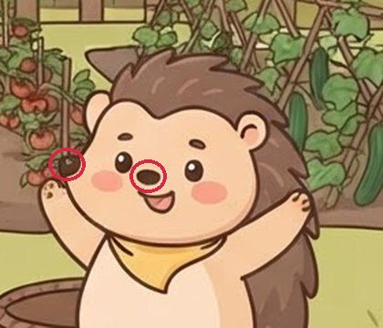
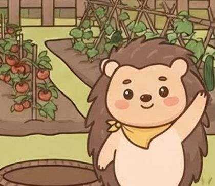

AI 서비스 인 프로덕션 · Wrap up · 2026-11-10
내가 쓰려고 만든 앱
아이가 볼 영상을 내가 고르고 싶어서 만든 앱이, 17일 강의를 지나며 남의 가족도 쓰는 서비스가 되어 가는 이야기. 튜튜키즈 제작기와 배운 점을 여섯 장으로 묶었다.
튜튜키즈 = 부모가 승인한 YouTube 영상만 아이에게 보여 주는 가족용 앱. 코드는 거의 다 AI(Claude Code)가 썼고, 강의에서 배운 걸 노드마다 이 앱에 넣어 봤다. 장마다 📘는 그때 강의 내용이고, 배운 점은 맨 끝에 모았다.
강의 전 · feat. AI 바이브 코딩
1내가 쓰려고 만든 앱
출발은 아이의 시청 습관이었다. 숏츠·릴스를 한번 열면 끝없이 넘긴다. Family Link는 앱과 시간만 막는다. YouTube 앱을 막으면 볼 게 없고, 열면 전부 열린다. 그래서 내가 고른 영상만 나오는 앱을 직접 만들기로 했다.
🛡 Family Link가 하는 일
- 앱 설치 승인, 하루 사용 시간
- Chrome은 승인한 사이트만
- YouTube 앱은 통째로 막기
📺 튜튜키즈가 하는 일
- 부모가 승인한 영상만 재생(공식 임베드)
- 아이 검색은 YouTube가 아동용으로 지정한 것만, 보려면 부모에게 부탁
- 아이 이름·계정은 받지 않음
그럼 YouTube 키즈는? 진짜 경쟁 상대는 이쪽이다. 만들고 열흘쯤 지나서 YouTube 키즈에도 “승인한 콘텐츠만” 모드가 있다는 걸 알았다. 그래서 승인 다음에 무엇을 더 해 줄지 고민했다.
▶ YouTube 키즈 승인 모드
- 부모가 고른 영상·채널만 보임
- 아이 검색은 꺼짐
📺 튜튜키즈가 더하는 것
- 아이가 찾아서 부탁 → 부모가 승인
- 영상을 70% 봐야 퀴즈, 맞히면 포인트·보상
- 부모가 보는 활동 기록, 우리 채널 공식 퀴즈
10-19 · 노드 1
2PRD 한 장과 라즈베리파이
첫 구조는 단순했다. 나만 쓰니까 집에 있는 라즈베리파이 한 대면 충분했고, 밖에서는 Tailscale로 들어갔다. 아이 태블릿에는 태그를 붙여 앱 포트 하나만 열었다.
이름은 키즈 튜브(kids-tube)였다. 그런데 YouTube 브랜드 규정에 걸렸다. “Tube”처럼 YouTube를 떠올리게 하는 이름은 쓰면 안 된다.
- 사용 맥락 · 채널→부모 폰(관리)과 아이 기기(시청) 두 화면으로
- AI 오류 대응→“AI는 추천, 공개는 부모”
- PRD 한 장→접근 제어·데이터 처리·비용·파일럿 칸을 채움
10-21 ~ 11-09 · 노드 1·10·11·15
3AI를 넣어 보자
앱을 열어 줬더니 반응은 이랬다.
그래서 영상이 둘로 나뉘었다. 📚 학습 영상은 보고 퀴즈를 풀어 점수를 모으고, ⭐ 보상 영상은 모은 점수로 그날 하루 연다. 그런데 아이는 금방 영상을 안 보고 찍기 시작했다(10-24). 규칙이 하나씩 늘었다.
아이가 영상을 보다가 궁금한 걸 AI에게 물어볼 수 있게 해 봤다. 그런데 AI에게 “퀴즈 정답은 알려 주지 마”라고 써 둬도 가끔 알려 줬다. 그래서 답을 아이에게 보내기 전에 코드가 한 번 더 본다. 질문을 골라 보자.
초록 칸은 실제 앱 코드에 넣어 나온 답 그대로다. 점선 칸(막기 전 답)은 AI가 실제로 썼던 답을 옮긴 예시다.
- AI 작업 기록(트레이스) 노드 10→퀴즈를 만들 때마다 모델·걸린 시간·비용을 한 장씩 남기고, 부모가 누른 👍👎도 그 장에 붙는다. 대본 글은 안 남기고 글자 수만
- 시험 문제집(데이터셋) 노드 11→아이 질문 20개로 AI 지시문 네 가지를 비교. 같은 지시문도 돌릴 때마다 점수가 달랐다
- 기록 보고 고치기 노드 15→실제 답을 보니 39%가 3문장을 넘음 → 고친 뒤 0%
10-23 ~ 지금 · 노드 1·12
4전용 채널을 만들자
AI 퀴즈에는 재료가 필요하다. 그런데 남의 영상 자막을 가져오는 건 저작권 위반 소지가 있다. 부모에게 대본을 붙여 넣게 하자니 나부터 귀찮았다. 그래서 퀴즈까지 붙은 영상을 직접 만들기로 했다. AI가 영상을 보고 퀴즈를 만드는 것도 넣었는데, 비용 문제가 발생했다(건당 약 80원). 그래서 문제은행을 만들어 퀴즈도 미리 튜튜키즈 채널 영상에 매칭시키기로 했다. 부모는 “⭐ 공식 퀴즈 불러오기”만 누르면 된다. 채널 이름도 같은 이유로 @TyuTyuKids가 됐다.
제작비는 Google Cloud 무료 체험 크레딧(약 40만 원)이었다. 처음엔 영상 생성 모델로 클립을 만들었는데 124초에 약 1만 7천 원이 들었다. 그래서 그림 + 코드 애니메이션 + 음성 합성으로 바꿨고, 험난한 영상 제작이 시작됐다.
음성: “아버지가방에들어가신다”
음성 합성(TTS)은 어디서 끊어 읽느냐에 따라 뜻이 바뀐다. 그래서 대본마다 끊는 자리(|)를 따로 적어 둔다. 눌러 보자.
그림: 캐릭터가 매번 변신한다


그 밖에도 집이 장면마다 통나무집·초가집·기와집으로 바뀌고, 돌이 장면마다 작아졌다. 그래서 배경과 소품을 먼저 한 장 그려 두고 계속 다시 쓴다. 다시 그릴 때마다 크레딧이 들어서, 한 편에 그림 20~45번 그리던 것이 15~19번으로 줄었다. 위 그림은 실제 초안이다.
두 AI 세션이 나눠 만든다
- 데이터 처리 노드 1→남의 자막은 긁지도 저장하지도 않음
- 한 건의 원가 노드 12→편마다 그림 호출·음성 글자 수를 적어 크레딧이 끝난 뒤 제작비를 셈
10-20 ~ 11-04 · 노드 2~9·12
5남이 써도 될까
집 밖에서도 써야 했고, 조원 가족도 써 보기로 했다. 라즈베리파이에서 Cloud Run으로 옮기자 배포가 일이 됐다. 솔직히 과정이 너무 복잡해서 거의 AI에게 맡겼다. 대신 운영에 내보내는 버튼만은 사람이 누른다. 에이전트가 운영 배포를 실행하려 하자 Claude Code 자동 모드가 먼저 막았고, 강의의 원칙도 같았다.
휴대폰에서는 옆으로 밀어 본다.
사용자가 아직 적어서 트래픽 걱정은 와닿지 않았다. 그런데 AI가 계속 짚은 문제가 있었다. 콜드 스타트. 버튼을 눌러 보면 바로 보인다.
Cloud Run은 요청이 없으면 서버를 0대로 줄여 돈을 아낀다. 다음 요청이 오면 서버를 새로 켜는데, 그 몇 초가 콜드 스타트다.
- Cloud Run · 시크릿 노드 2→파이에서 클라우드로 옮기고, 키는 비밀 보관함(Secret Manager)에
- 서버 수 · 한도 노드 3→서버는 1대만, 가족마다 하루 검색·AI 횟수 제한
- 자동 시험 · 테스트 서버 노드 4·5→머지하면 시험을 돌리고 테스트 서버(staging)에 먼저. 한국 시간에서만 맞던 날짜 버그를 시험이 잡음
- 도커 이미지 노드 6·7→테스트 서버에서 확인한 이미지를 그대로 운영에
- 무중단 배포 노드 8·9→새 버전을 먼저 띄워 확인하고 바꿈(블루그린), 되돌리기 버튼
- 결제 · 공격해 보기 노드 12→이용권 테스트 결제(진짜 결제는 사업자 등록 뒤). 이용권 1개로 요청 10개를 한꺼번에 보내니 AI가 10번 불림 → 한 번에 하나만
걸린 곳 가입이 어렵다는 말을 들었다(초대 코드 → 승인 → Google 로그인 → 기기 연결). 11-01부터는 우리 집 이름 + Google 로그인으로 바로 가입하고, 체험 코드로는 로그인 없이 24시간 써 볼 수 있다.
11-05 ~ 지금 · 노드 13·14
6지금 오르는 산
노드 13·14에서 Expo로 아이 앱을 만들었다. 웹 화면을 앱으로 감싸고, 우리 주소가 아니면 열지 않는다. PC에서도 YouTube 끝 화면을 누르면 밖으로 나가던 게 계기였다. 빌드는 성공했는데 아이 폰은 Family Link가 설치를 막았고(“IT 관리자에게 문의”), 기기 설정에서 부모가 허용해야 했다.
- Expo · Expo Go→앱 안에서는 Google 로그인이 안 돼서 부모 화면은 PIN으로
- EAS 빌드 · 스토어→설치 파일(APK)을 만듦
💡17일이 남긴 것
나만 쓰는 앱과 남이 쓰는 앱은 다른 앱이다
기능은 그대로인데 이름, 약관, 개인정보, 콜드 스타트, 남용, 가입 문턱이 새로 생겼다. 강의의 노드 대부분이 이 차이를 메우는 일이었다.
방향은 사람이 정한다
복잡한 배포 과정은 AI에게 의지할 수 있지만, 방향은 사람이 정한다. AI가 알아서 다 해 주는 건 아니다(코가 두 개여도 말하지 않으면 모른다).